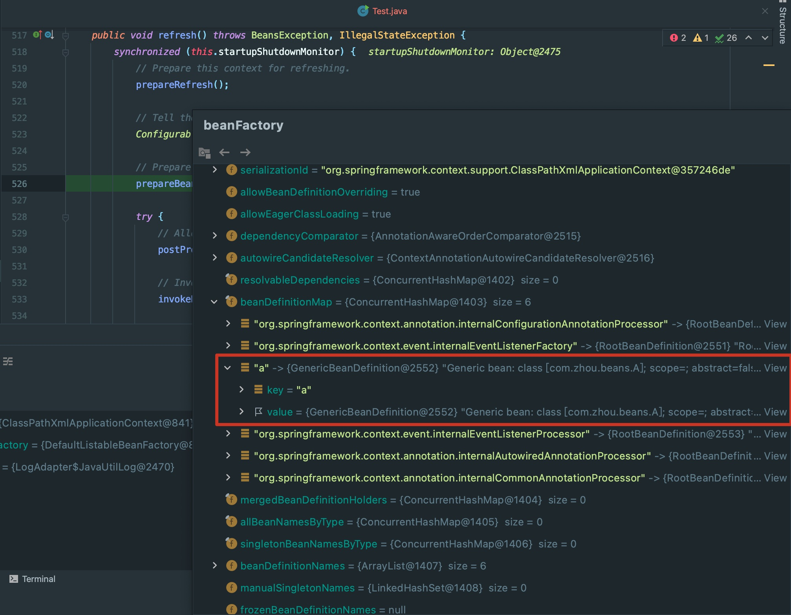

思考
spring的2大特性是IOC和AOP，IoC的的作用是将bean的创建与销毁交给spring容器来管理。
那么spring的第一步是需要加载哪些bean呢？一般我们可以通过注解的方式和XML的方式，那么spring是如何识别呢？
1 |
|
准备工作
1 | // main函数中的内容 |
由代码可知第一行就完成了所有的工作，下面就分析一下第一行代码做了哪些工作
1 | public ClassPathXmlApplicationContext( |
详细阅读refresh
prepareRefresh
prepareRefresh主要做了以下几件事：
- 标识当前context环境close为false
- 标识当前context环境active为true
- 初始化context环境中的占位符属性${}
- 设置ApplicationListener，没有就新建，有的话删除老的，在添加新的
1
2
3
4
5
6
7
8
9
10
11
12
13
14
15
16
17
18
19
20
21
22
23
24
25
26
27
28
29
30
31
32
33
34
35
36
37
38protected void prepareRefresh() {
// Switch to active.
this.startupDate = System.currentTimeMillis();
// 原子boolean值，用来标识该context没有被关闭
this.closed.set(false);
// 原子boolean值，用来标识该context已经激活了
this.active.set(true);
if (logger.isDebugEnabled()) {
if (logger.isTraceEnabled()) {
logger.trace("Refreshing " + this);
}
else {
logger.debug("Refreshing " + getDisplayName());
}
}
// 初始化context环境中的占位符属性${}
initPropertySources();
// Validate that all properties marked as required are resolvable:
// see ConfigurablePropertyResolver#setRequiredProperties
getEnvironment().validateRequiredProperties();
// Store pre-refresh ApplicationListeners...
if (this.earlyApplicationListeners == null) {
this.earlyApplicationListeners = new LinkedHashSet<>(this.applicationListeners);
}
else {
// Reset local application listeners to pre-refresh state.
this.applicationListeners.clear();
this.applicationListeners.addAll(this.earlyApplicationListeners);
}
// Allow for the collection of early ApplicationEvents,
// to be published once the multicaster is available...
this.earlyApplicationEvents = new LinkedHashSet<>();
}
obtainFreshBeanFactory
获取beanFactory的时候就已经解析出我们自己写的bean了。另外在阅读源码的时候发现只有2中方式来加载bean，一种是getConfigResources，另一种是getConfigLocations。
1 | protected ConfigurableListableBeanFactory obtainFreshBeanFactory() { |
beanFactory中成功解析到我们所需要的bean了
